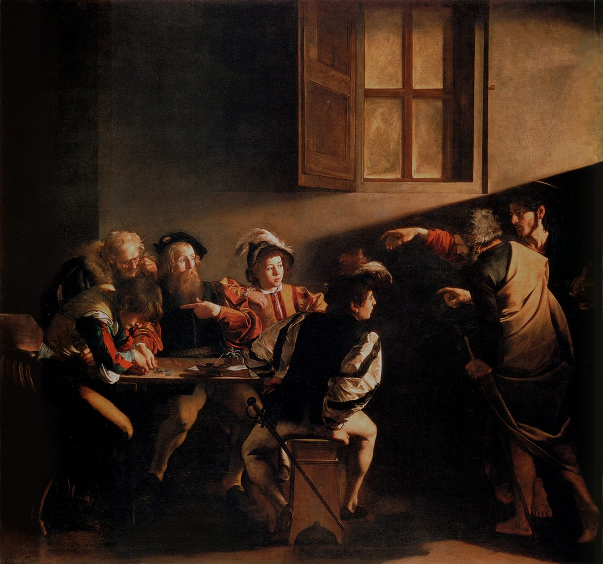

Matthew 9 — The Mister Translation

Caravaggio dresses the whole scene as his own Rome, not first-century Judea — plumed hats, slashed doublets, a table of coin-counters lit like a tavern. Christ and Peter arrive from the dark at the edge of the frame, almost an intrusion into an ordinary business transaction, and the single shaft of light overhead is the only supernatural note in an otherwise completely everyday room. ⚠ Who is Matthew has been argued for a century: the traditional reading is the bearded man pointing at himself, but a persistent minority reading takes the young man bent over the coins at the table's near end, unaware he is even being addressed, as Matthew instead — and the painting may be deliberately ambiguous about which man looks up. Either way, the hand gesture itself quotes Michelangelo's Adam on the Sistine ceiling, a debt Caravaggio's contemporaries would have recognized at once.
.jpg){kind=link}
Translator’s Notes
“His own city.” Capernaum — already named as such at 4:13, and this is the return trip after the Gadarene crossing that closed the previous chapter. The town Jesus adopted as a base is where this scene, and the next, both happen.
“Seeing THEIR faith” — not necessarily his. The Greek plural is deliberate: it is the faith of the men who carried him (Mark and Luke both make the stretcher-bearers explicit; Matthew is more compressed but keeps the plural pronoun). ⚠ A man is healed here on someone else’s belief, which this library will not smooth into a general statement about faith — the text specifically credits the carriers.
⚠ “Your sins ARE forgiven” — a passive with no stated agent. Aphientai is what grammarians call a “divine passive”: the reverent Jewish habit of stating that God has acted without naming God as the grammatical subject, the same instinct behind “the kingdom of the HEAVENS” for “the kingdom of God.” The scribes hear it correctly anyway — only God forgives sins, so an unnamed agent is still a claimed one, which is exactly why they call it blasphemy before he has said a further word.
The trap in “which is EASIER.” Saying “your sins are forgiven” is, in one sense, the easier claim to make — nothing about it can be checked. Saying “get up and walk” is the harder claim — it is falsified in front of everyone within seconds if it fails. Jesus deliberately does the VERIFIABLE miracle to authenticate the UNVERIFIABLE one, and says so: so that you may know.
⚠ “The SON OF MAN has authority on earth” — the title from last chapter, now doing its other work. At 8:20 this site flagged two backgrounds for ho huios tou anthrōpou — Ezekiel’s bare ‘mortal’ and Daniel 7:13’s figure given ‘dominion’ — and said the title is used in both directions. There it named a man with nowhere to sleep; here, four verses later in narrative time, the SAME title claims exousia, authority, to forgive sins on earth. The double edge is not an accident of usage; it is the same word doing both jobs inside one chapter-break.
Verse 6’s broken sentence, kept broken. Jesus is still speaking — to the scribes, about his own authority — when the narrator interrupts to redirect the same breath to the paralyzed man: “so that you may know… — then he says to the paralyzed man — ‘Get up.’” The Greek genuinely runs the sentence together this way (Mark 2:10–11 has the identical seam); this translation keeps the interruption visible rather than smoothing it into two tidy sentences.
⚠ “Glorified God, who had given such authority to MEN.” Plural — anthrōpois, not ‘to this man.’ ⚠ Two readings, both defensible: the crowd may simply mean Jesus, generically (‘a man has this power’), or Matthew may be quietly widening the frame — authority now resident among humanity, the same authority Jesus will later hand to the disciples themselves (‘whatever you bind on earth…,’ 16:19; 18:18, neither yet on these pages). The library prints the plural and leaves the width of its reference open.
⚠ A man names himself in his own book. Mark 2:14 and Luke 5:27 both call this man Levi (Mark adds ‘son of Alphaeus’); only here is he Matthew — and only this Gospel’s own list of the Twelve adds the label the other two omit: ‘Matthew THE TAX COLLECTOR’ (10:3, not yet on these pages). A convert rarely gets to introduce himself by the job he was called out of; tradition has long read this as the author’s own signature, quietly confessing what the parallel Gospels leave off his name. See the encyclopedia entry.
“Follow me” — the same bare call, the same instant answer. Akolouthei, present imperative, no negotiation — matching the terse ‘Come after me’ that pulled two fishermen off their nets at 4:19. And the same verb keeps recurring as the whole chapter’s background hum: crowds ‘followed’ in 8:1, the disciples ‘followed’ onto the boat in 8:23, the blind men ‘followed’ in 9:27. A tax collector rising from a booth and a boy leaving his nets get the identical two Greek words.
“Reclining” with the wrong people, at the very table the last chapter promised. Synanekeinto is the same verb Matthew used one chapter earlier for the messianic banquet — ‘many will come from east and west and RECLINE with Abraham’ (8:11). There it was a future promise about Gentiles; here it is a present fact about ‘tax collectors and sinners.’ The eschatological table starts setting itself in Matthew’s own house.
⚠ “Go and learn” — a rebuke, and a citation of Hosea. The phrase is a known rabbinic idiom for ‘you plainly have not understood your own Scripture,’ aimed at scribes of the Law by someone they think has none. What they are sent to learn is Hosea 6:6 (a book not yet on these pages beyond its first chapter, though see the encyclopedia entry on the prophet): ‘I desire mercy and not sacrifice.’ Matthew will have Jesus quote this exact verse a second time, at 12:7, against the identical opponents over the identical charge.
⚠ “…but sinners” — and a real manuscript gap. KJV and Douay both close the sentence ‘but sinners TO REPENTANCE’ — a phrase the earliest witnesses of Matthew do not have (it stands, without dispute, at the parallel in Luke 5:32, and appears to have migrated across). The critical text, and this translation, end the sentence at ‘sinners.’ The Physician saying that opens the paragraph (‘those who are well have no need…’) already carries the same idea without the borrowed words.
John’s own disciples, still a going concern. The Baptist has been in the story since chapter 3 and will not resurface in person until he is in prison at 11:2 (not yet on these pages) — but his movement plainly continued as its own thing alongside Jesus’, disciplined enough to keep its own fasting practice and notice the difference.
⚠ “The BRIDEGROOM” — a claim made sideways. Jesus never says ‘I am the bridegroom’; he answers a question about fasting with an image, and lets the identification stand on its own. The background is the Hebrew Bible’s standing marriage-metaphor for the covenant — Jehovah as Israel’s husband, most memorably in Hosea (2:19–20, not yet on these pages, though see the entry — the same prophet quoted three verses earlier) and Isaiah 62:5. Wedding guests do not fast at a wedding; the bridegroom is, unmistakably, present.
⚠ “When the bridegroom is TAKEN AWAY from them” — the first shadow of the cross in this Gospel. Aparthē, a violent verb (‘taken away, removed by force’), not ‘departs.’ This is easy to read past on a first pass through a chapter about healings, and it is the earliest hint anywhere in Matthew that this story ends in loss — five full chapters before Jesus speaks of his death directly (16:21). No one in the scene reacts to it; the text does not pause on it either.
Cloth and wineskins — not ‘fasting is wrong,’ but ‘the new does not patch onto the old.’ Both images make the identical point from different materials: a patch of unshrunk cloth will shrink on its first wash and tear the old garment worse than before; new wine still fermenting will split a skin that has already stretched to its limit and lost its give. ⚠ Neither parable argues that the old is bad — a good garment, good wine already settled — only that forcing a NEW thing into an OLD container destroys both. The reader is left to supply what the new thing is; the parable does not name it.
Compressed, deliberately. Mark 5 gives this ruler a name (Jairus), tells us the girl is still dying rather than dead when he first speaks, and lets the woman’s whole medical history (twelve years, many physicians, all her money, no better) unfold across several verses. Matthew has the father say ‘she has JUST died’ from his very first sentence and gives the woman one clause. ⚠ This is the same editorial habit already noted in reverse at 8:28 — Matthew there DOUBLED a detail (two demoniacs where Mark has one) that here he COMPRESSES. Adding witnesses and shortening narrative both serve the same overall aim: move fast, and let the reader supply the rest from what has already been established.
Bowed — the fifth time. Prosekynei, continuing the chain this site has tracked since the magi: a child bowed to (2:11), Herod’s lie about wanting to (2:8), the devil’s demand (4:9), a leper’s own gesture (8:2), and now an unnamed synagogue official. Every step so far has widened who does the bowing; nothing yet has settled what the gesture means.
⚠ The fringe of his garment — a detail that is also Torah observance. Kraspedon is the Greek word the Septuagint uses for the TASSELS the Law commands on the corners of a garment (Numbers 15:38–39, not yet on these pages) — which means the text is quietly showing Jesus wearing them. The same word returns at 14:36, where crowds beg only to touch this same fringe, and again at 23:5, where Jesus criticizes Pharisees for lengthening theirs for show. One garment-detail, three very different uses.
⚠ The direction of the contagion, again. A chronic flow of blood makes a woman ritually unclean under the Law (Leviticus 15:25–30, not yet on these pages) and passes that uncleanness to whoever she touches — the identical structure as the leper Jesus touched at 8:3. There he reached out and touched; here she reaches out and touches him. Either direction, Matthew reports no defilement travelling toward Jesus.
⚠ “Your faith has SAVED you” — the same verb as the name itself. Sesōken — the identical root as sōsei, ‘he will SAVE,’ from the naming of Jesus at 1:21. The verb covers both physical healing and the larger rescue the name promises, and the Greek does not force a reader to pick one meaning over the other. The woman is healed and, in the very word used, ‘saved,’ three times in three verses (v21, v22, v22 again).
“Not dead, but sleeping” — and the mockers who know better. Sleep is a standing biblical euphemism for death (Daniel 12:2, ‘those who sleep in the dust of the earth’), and some readers take Jesus at his literal word here — a deep unconsciousness, not death. ⚠ But the crowd’s reaction argues against that reading being the point: they LAUGH at him, because they, unlike him, know a corpse when they see one. The text does not let the miracle be explained away by its own onlookers.
⚠ “SON OF DAVID” — the first time anyone asks him for anything by that name. The title opened the whole Gospel, buried in a genealogy (1:1); this is its first use as a living petition, shouted by two men nobody in power would think to consult. It will return from a Canaanite woman (15:22), from a blind man outside Jericho (20:30–31), and from the crowds at the gates of Jerusalem (21:9) — each time from someone with no standing to say it, until the whole city is saying it at once.
Faith, asked about directly. This is now the fourth time in two chapters that FAITH is the explicit hinge of a healing — the centurion’s (8:10), the carriers’ (9:2), the woman’s (9:22), and now these two men’s, put to them as a direct question before anything happens: ‘Do you believe I am able?’ Not one of the four healings in this run happens without the word being said first.
⚠ A command given, and immediately disobeyed. Enebrimēthē is a strong word — nearer ‘snorted at them sternly’ than a mild caution — and what follows is one of the few places in this Gospel where the disciples’ instant-obedience pattern (the fishermen, Matthew himself) is answered by the opposite: told to stay silent, the healed men go out and do exactly what they were told not to. The text does not scold them for it either.
⚠ The first time an opponent stops arguing and starts accusing. Every objection so far in these two chapters has questioned Jesus’ JUDGMENT — why eat with sinners, why not fast. Here, for the first time, the Pharisees name a SOURCE: ‘he casts out demons by the RULER of the demons.’ It is a different order of charge, and Matthew will give it a full scene of its own at 12:22–32 (not yet on these pages), where Jesus answers it at length and calls it the one sin that is not forgiven. What is a single muttered line here becomes, three chapters later, the center of the argument.
“Never was anything like this seen in Israel” — and, in the very next verse, the opposite verdict. Matthew sets the crowd’s superlative directly beside the Pharisees’ accusation with no comment bridging them. Same event, two readings, and the chapter simply lets both stand.
⚠ The bracket 4:23 promised — closed, but not quite word for word. This site’s own note on 4:23 already flagged this sentence as coming: ‘teaching in their synagogues and proclaiming the good news of the kingdom and healing every disease and every sickness’ is REPEATED HERE VERBATIM, in the Greek, word for word — the exact center of the sentence survives unchanged across five chapters. ⚠ What is worth adding precisely: the two ENDS of the sentence do differ. 4:23 opens ‘he went about in all GALILEE’ and closes ‘among THE PEOPLE’; 9:35 opens ‘JESUS went about all the CITIES AND VILLAGES’ (naming him outright, and widening the geography) and drops the closing phrase entirely. So the frame is not a perfect mirror — it is a fixed center with a widened opening and a trimmed close, which is arguably more interesting than an exact repeat would have been: the teaching-preaching-healing formula is the constant, and everything describing WHERE it happens has grown.
“Harassed and thrown down” — a harsher root than the English shows. Eskylmenoi comes from a verb that in earlier Greek means to FLAY or MANGLE, softened by this period to ‘troubled, worn out’; errimmenoi is ‘thrown down, collapsed, left lying.’ KJV reads the gentler ‘fainted, and were scattered abroad.’ The compassion (esplanchnisthē) that follows is not pity from a distance; the word is built on the Greek for entrails — a gut-level reaction to something genuinely battered, not merely tired.
Sheep without a shepherd — an old complaint, freshly made. The image runs through the Hebrew Bible for a leaderless people — Moses asking for a successor so the congregation will not be ‘as sheep which have no shepherd’ (Numbers 27:17, not yet on these pages), and Ezekiel’s long indictment of Israel’s own shepherds (Ezekiel 34, not yet on these pages), where God finally says he will shepherd the flock himself. Matthew does not quote either directly; the image is simply how the Hebrew Bible has always talked about this exact problem.
⚠ The prayer this chapter ends on is answered at the start of the next. ‘Ask the Lord of the harvest to send out laborers’ — and Matthew 10 opens with Jesus doing precisely that, naming and commissioning the twelve. The disciples are told to pray for what they themselves are about to become.
Patterns worth carrying forward
Where this translation keeps the exact / distinct words: “take heart” for tharsei, kept identical at v2 and v22 so the echo is audible; “a paralyzed man” over the archaic ‘sick of the palsy’ (KJV); the broken sentence of verse 6 left broken rather than smoothed into two clean sentences; “tax collector” over ‘publican’; “the sons of the bridechamber” kept as the idiom is; “saved / healed” for sōzō, printed with both senses live rather than collapsed into one; and “Son of David” kept exactly where it first becomes a petition rather than a genealogical fact.
Where it goes its own way: “but sinners” at 9:13, ending the sentence where the earliest manuscripts end it (KJV/Douay add ‘to repentance,’ imported from Luke 5:32); “harassed and thrown down” for eskylmenoi kai errimmenoi (KJV ‘fainted, and were scattered abroad’), keeping the physical harshness of the Greek roots audible; and the quotation-marks-and-dash treatment of verse 6’s interrupted sentence, printed as one continuous utterance with the narration set off rather than as two separate speeches.
Echoes paid. The Son of Man’s double edge, now doing its Daniel-7 work (authority, not homelessness); proskyneō, a fifth time, from an unnamed official; the messianic banquet’s ‘reclining’ (8:11), now literal in Matthew’s own house; the leper’s reversed contagion (8:2–3), now touching outward instead of being touched; and Jesus’ own name, ‘he will SAVE’ (1:21), now the verb of an actual healing three times over.
Echoes planted. ‘Taken away’ — the first, easily-missed shadow of the cross, five chapters before it is named outright; the Beelzebul charge, one line here and a full scene at 12:22–32; ‘Son of David,’ which returns at 15:22, 20:30–31 and the gates of Jerusalem at 21:9; the fringe of the garment (kraspedon), touched again at 14:36 and criticized at 23:5; and the harvest prayer, answered by name at the start of chapter 10.
Next in this book: chapter 10 — the prayer for laborers answered by name: the Twelve listed and sent out, with their instructions for the road.